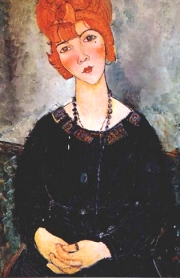

Chagall: Paøíž z okna
|
FRANCIE
Centrem meziváleèné kultury byla Francie. Pøedevším Paøíž pøitahovala umìlce z celého svìta. K nejvýznamnìjším malíøùm tzv. paøížské školy patøil Ital Amedeo Modigliani [modiljáni] nebo Rusové Marc Chagall [šagal] a Vasilij Kandinskij.
Kandinskij: Žlutá, èervená, modrá
|
Historie
Francie byla na zaèátku 20. stol. koloniální velmocí. V 1. sv. válce stála na stranì Dohody a na jejím území probíhaly nejtìžší boje. Bìhem bojù u Verdunu (1916) padl témìø milion vojákù. Versailleská mírová smlouva (1919) pøiøkla Francii øadu území poraženého Nìmecka. Od roku 1940 byla velká èást Francie okupována Nìmci a na jihu vznikla vichistická republika maršála Pétaina s pronìmeckou vládou.
|
Henri Barbusse (1873-1935)
Henri Barbusse [anri barbis] nastoupil do války jako dobrovolník. Otøesné zážitky z bojù ho vedly k napsání protiváleèného románu Oheò. Další román Jasno dal jméno i hnutí Clarté, které sdružovalo francouzské intelektuály sympatizující s komunismem. Je také autorem knih Bílý teror, Stalin nebo Zola.

Obálka románu Oheò
|
Henri Barbusse: Oheò
Oheò vyšel roku 1916 uprostøed 1. svìtové války. Nese podtitul Deník bojového družstva. Tento protiváleèný román nemá hlavního hrdinu. Dìj tvoøí samostatné kapitoly, které líèí zákopovou válku, strádání ranìných v lazaretech, dovolenou nebo obsah zavazadel vojákù. Autor ukazuje nesmyslnost války a zpochybòuje nejen smysl váleèného hrdinství, ale také nacionalismus.
Èeský pøeklad vyšel už roku 1917. Rakousko-uherské úøady ho povolily zøejmì proto, že zobrazoval poraženecké nálady v øadách protivníka.
|

Èím tì zaujaly ukázky z románu Oheò?
Proè se muži stávají vojáky?
Proè se válèí?
|
Romain Rolland (1866-1944)
Romain Rolland [romen rolan] strávil 1. sv. válku v neutrálním Švýcarsku, kde publikoval pacifistické èlánky Nad váleènou vøavou. Je autorem knih Dobrý èlovìk ještì žije, Petr a Lucie nebo románù-øek Jan Kryštof a Okouzlená duše. Vydal životopisné romány o Beethovenovi, Michelangelovi a Tolstém nebo indických myslitelích Gándhím, Ramakrišnovi a Vivekanandovi. Byl rovnìž významným dramatikem – Danton, Robespierre. Roku 1915 obdržel Nobelovu cenu za literaturu.
|
Romain Rolland: Petr a Lucie
Novela Petr a Lucie líèí tragický pøíbìh lásky mezi Petrem Aubierem a malíøkou Lucií. Oba milenci umírají na Velký pátek pod troskami kostela, který byl zasažen pøi náletu na Paøíž. Jejich smrt se tak stává obdobou Kristovy vykupitelské obìti.
|

O èem pojednává tato ukázka?
Jak do dìje proniká válka?
|
Marcel Proust (1871-1922)
Marcel Proust [marsel prust] je autorem experimentálního románu Hledání ztraceného èasu, který se dostal do Guinnessovy knihy rekordù jako nejdelší prozaické dílo. Spisovatel na nìm pracoval celý život. Román má celkem 7 dílù (první vydání èítalo 14 svazkù o 3500 stranách), posledním ale už autor nestihl dát definitivní podobu. Nìkdy vychází samostatnì èást 1. dílu Swannova láska. Proust žil osamìlým životem. Kontakt s okolím mu znemožòovala tìžká choroba.
Kandinskij
|
Marcel Proust: Hledání ztraceného èasu
Rozsáhlý psychologický román Hledání ztraceného èasu tvoøí 7 dílù – Svìt Swannových, Ve stínu kvetoucích dívek, Svìt Guermantových, Sodoma a Gomora, Uvìznìná, Zmizelá Albertina (Uprchlá) a Èas znovu nalezený. Dìj je potlaèen ve prospìch líèení pocitù a nálad nebo vypravìèových úvah. Složité vìtné konstrukce obsahují øadu vsuvek a propojují rùzné èasové roviny. Èást Swannova láska se odehrává 30 let pøed narozením vypravìèe. Dále román líèí vypravìèovu lásku k Albertinì, jeho návštìvy v salónu vévodkynì de Guermantes, mravní zvrácenosti barona de Charluse nebo Paøíž v dobì 1. svìtové války.
O román nemìl zájem žádný nakladatel, a proto 1. díl vydal roku 1913 autor vlastním nákladem. Už 2. díl byl ale ocenìn prestižní Goncourtovou cenou.
|

Blanche: Proust
Srovnej ukázky z prvního a posledního dílu Hledání ztraceného èasu.
Myslíš, že si nìkdy celý román pøeèteš? Proè?
Vyber si jedno složitìjší souvìtí a pokus se o jeho tematický rozbor.
Co mìl Proust spoleèného s filozofem Bergsonem?
|
André Gide (1869-1951)
Gide [žid] opovrhoval náboženstvím a upjatou morálkou. Vyznával pøirozenost, život a individualismus. Napsal romány Imoralista nebo Penìzokazi, komedii Prométheus špatnì pøipoutaný a lyrickou prózu Pozemské živiny.
V autobiografickém románu Zemøi a živ budeš se otevøenì zabývá homosexualitou. Reportáž Návrat ze Sovìtského svazu kritizuje pomìry v stalinském Rusku (v Èechách na ni reagoval S. K. Neumann polemikou Anti-Gide). Roku 1947 obdržel Nobelovu cenu za literaturu.
|
André Gide: Penìzokazi
Gidùv experimentální „román o románu“ vypráví pøíbìh spisovatele Eduarda, který chce napsat román Penìzokazi. Penìzokazectví je symbolem spoleèenské pøetváøky a falešnosti v umìní i mezilidských vztazích. Hlavní dìjovou linii tvoøí Eduardùv homosexuální vztah k mladíkovi z bohaté rodiny, který se rozhodl vzepøít pokrytecké morálce. Dìj je ale potlaèen ve prospìch Eduardových literárnì teoretických úvah o „èistém románu“.
Dùležitou roli v kompozici Penìzokazù hrají deníkové záznamy jednotlivých postav nebo vložené dopisy. Gide navíc k románu pøipojil text Deník Penìzokazù, ve kterém líèí okolnosti vzniku svého díla.
|
Shrò hlavní myšlenky ukázky. Souhlasíš s nimi?
Psal/a sis nìkdy deník? Co v nìm bylo?
|
Anatole France (1844-1924)
Anatole France [anatol fráns], vl. jm. Thibault [tibo], proslul jako nesmlouvavý satirik. Jeho povídka Crainquebille je odezvou na Dreyfusovu aféru, v knize Jana z Arku zesmìšòuje francouzskou národní hrdinku a v románì Ostrov tuèòákù už celé dìjiny Francie. Do èeštiny byla také pøeložena románová tetralogie Historie našich dnù nebo satira Vzpoura andìlù. France se zapojil do hnutí Clarté a vstoupil do komunistické strany. Roku 1921 dostal Nobelovu cenu za literaturu.
Pouèilo se lidstvo z vlastní historie? Proè?
|
Anatole France: Ostrov tuèòákù
Satirický román Ostrov tuèòákù zesmìšòuje významné okamžiky z francouzské historie i samotné dìjepisectví. Zaèíná pokøtìním tuèòákù krátkozrakým misionáøem a jejich pøijetím do civilizované lidské spoleènosti. Postupnì líèí èiny Drakonì Velikého (Karel Veliký), Trumpetra (Napoleon), aféru s 80 000 otýpkami sena (Dreyfusova aféra) a dostává se až k souèasnosti. France nastiòuje i budoucí vývoj, kdy se vše vrací k pùvodnímu primitivnímu uspoøádání a historie se znovu opakuje v jakémsi kruhu.
|

Co víš o sv. Kateøinì?
Jakými prostøedky France dosáhl humorného vyznìní?
Nakresli k románu ilustraci.
Zkus napsat parodii na èeské dìjiny.
|
Jacques Prévert (1900-1977)
Jacques Prévert [žak prevér] zaèínal jako surrealista. Pozdìji vydal básnické sbírky Slova nebo Pøíbìhy. Byl také autorem filmových scénáøù – Dìti ráje, knih pro malé ètenáøe – Pohádky pro nehodné dìti a kabaretních výstupù.
O èem je film Dìti ráje?

Modigliani: Jean Cocteau
|
Jacques Prévert: Slova
Básnická sbírka Slova z roku 1946 obsahuje Prévertovy starší popìvky a verše, které psal pro rùzná kabaretní pøedstavení. Lyrické básnì a krátké pøíbìhy vynikají lehkostí a zpìvností. Díky tomu se stala Slova jednou z nejoblíbenìjších a nejvydávanìjších básnických sbírek. Øada Prévertových básní byla zhudebnìna.
Další autoøi a jejich díla
André Maurois: Ariel neboli Život Shelleyho, Byron, Voltaire, Chateaubriand
François Mauriac: Klubko zmijí
Jean Cocteau: Oèarovaný život, Dvojhlavý orel
Antoine de Saint-Exupéry: Malý princ, Zemì lidí, Citadela
|
Která z Prévertových básní tì zaujala nejvíce? Èím?
Zkus namalovat ptáèka.

Chagall: Narozeniny
|
Internetové stránky
Modigliani, malíø
Modigliani, malíø
Kandinskij, malíø
Rolland
Rolland
Proust
Proust
Gide
France
Prévert
Prévert
Prévert
Guinnessova kniha rekordù
Filmy
Èas znovu nalezený, režie R.Ruiz (podle Prousta)
Dìti ráje, režie J.Renoir
|
Doporuèená èetba
Barbusse, Henri: Oheò, pøel. M.Tomášková, Naše vojsko, Praha 1989
Brett, V: Henri Barbusse a ohlas jeho díla a èinnosti u nás, Praha 1955
Cocteau, Jean: Nepøerušená píseò, Praha 1980
Èerný, Václav: André Gide, Triáda, Praha 2002
Èerný, V.: Francouzská poezie, 1918-1945, Kra, Praha 1994
Gide, André: Penìzokazi, pøel. J.Heyduk, Odeon, Praha 1968
France, Anatole: Ostrov tuèòákù, Vzpoura andìlù, pøel. Krátký, Votrubová-Koutecká, Odeon, Praha 1977
Kopal, Josef: Romain Rolland, Orbis, Praha 1964
Neumann, S.K.: Anti-Gide neboli optimismus bez povìr a iluzí, Praha 1937
Prévert, Jacques: Divadelní høíèky, Praha 1967
Prévert, J.: Jsem jaký jsem, pøel. M.Bieblová, Èeskoslovenský spisovatel, Praha 1983
Prévert, J.: Slova, pøel. P.Skarlant, Akropolis, Praha 2000
Proust, Marcel: Hledání ztraceného èasu (6 svazkù), Odeon, Praha 1988
Proust, M.: Swannova láska, pøel. J.Heyduk, SNKLU, Praha 1964
Proust, M.: Myšlenky, Praha 1996
Rolland, Romain: Petr a Lucie, pøel. J.Zaorálek, Melantrich, Praha 1984
Rolland, R.: Život Beethovenùv, Život Michelangelùv, Život Tolstého, Praha 1957
|
Vypracuj písemný referát o nìkteré z uvedených knih.

Modigliani: Žena s náhrdelníkem
|
|